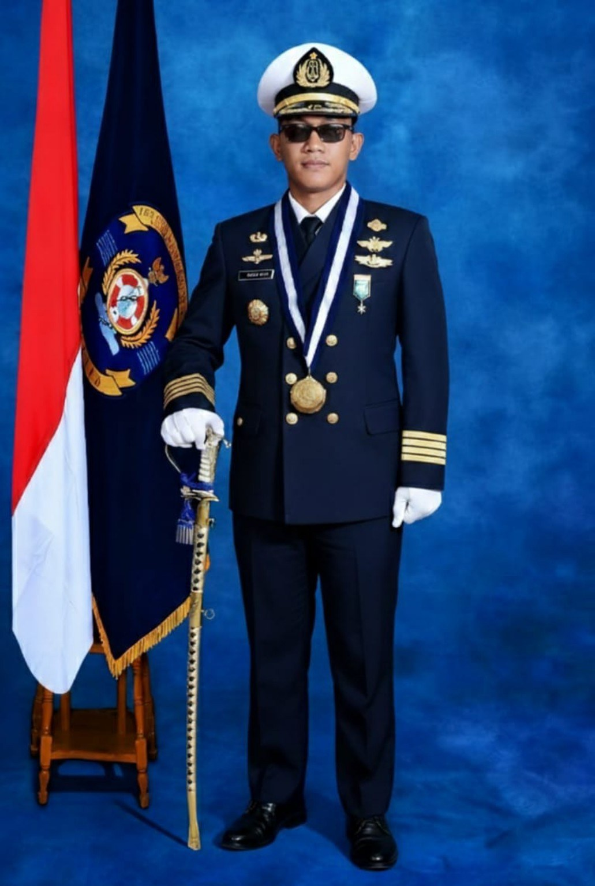
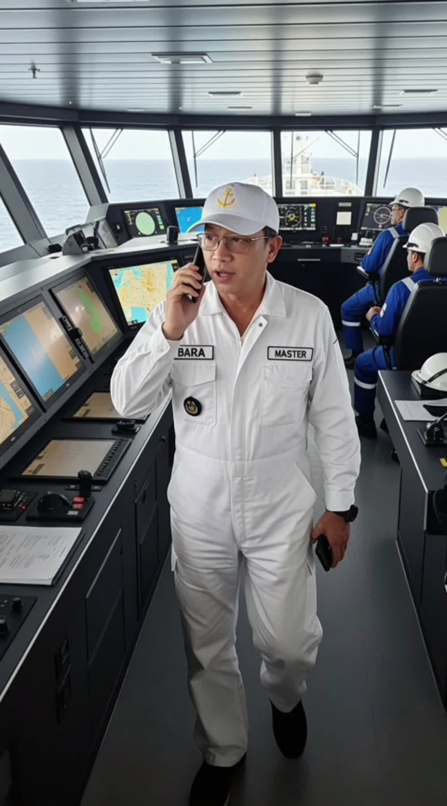
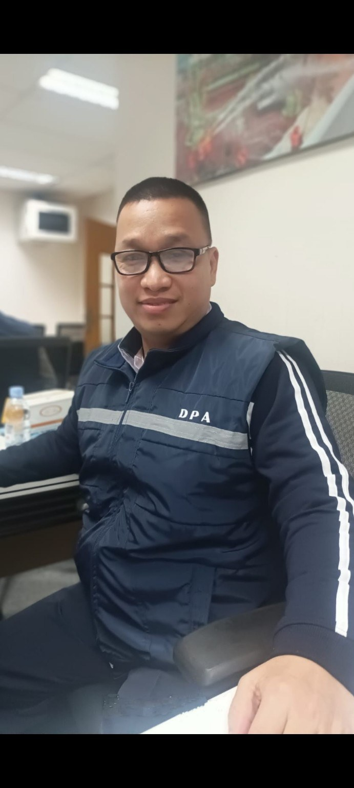
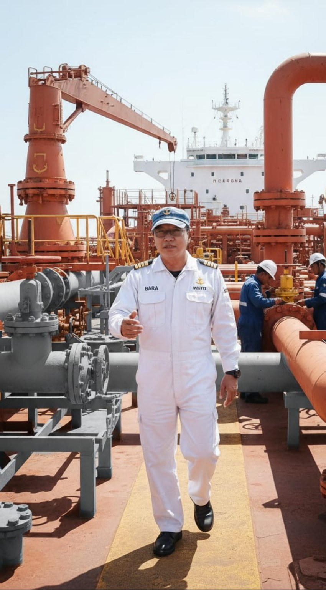

01. MQEIP / Marine Operations
Marine operations deck video.
Marine Superintendent, Designated Person Ashore (DPA), and Marine Operational Manager Lead — combining maritime leadership with marine applications, fuel-efficiency analytics, operational reporting and digital innovation.
Human-led. Data-informed. Intelligence-driven.

Recorded maritime operations and professional profile clips. Use the built-in video controls to play each uploaded MP4.
Marine operations deck video.
Professional onboard profile video.
Bridge and vessel walkthrough footage.
Operations briefing video.
Marine vessel inspection footage.
Vessel deck operations footage.
Video and image paths are relative to the repository root. Keep the media files beside index.html and preserve their exact filenames.
Professional and onboard photographs from the portfolio media folder.

Bridge Operations

DPA & Safety Leadership
Professional Profile

Onboard Operations
A curated overview of maritime applications and workflow concepts developed across marine operations, safety, fuel and digital intelligence.
Maritime ERP concept, fleet operations, dashboards, analytics and AIS integration.
Fleet, voyage, crew, maintenance, defects, certificates, audits, findings and action tracking.
Engine consumption, RPM analysis, bunker reconciliation and operational performance reporting.
Safety and risk records, compliance, incidents, certificates, audits and corrective actions.
CSV and spreadsheet validation, duplicate review, structured records and document-quality improvement.
Automation-oriented workflows connecting marine operations, fuel efficiency and QHSSE processes.
Vessel-position visualization concepts. Live data availability requires separate verification.
Reusable application templates with clean initial data, separate client deployments and configuration-based access.
A practical combination of marine operations, safety management and digital tools that support operational visibility.
Marine Superintendent · Designated Person Ashore (DPA) · Marine Operational Manager Lead
Focused on practical marine operations, compliance, fuel efficiency and the careful use of digital tools to improve visibility and decision support.
For professional enquiries, maritime application concepts, operational intelligence, fuel-efficiency analytics and digital workflow projects, please get in touch.